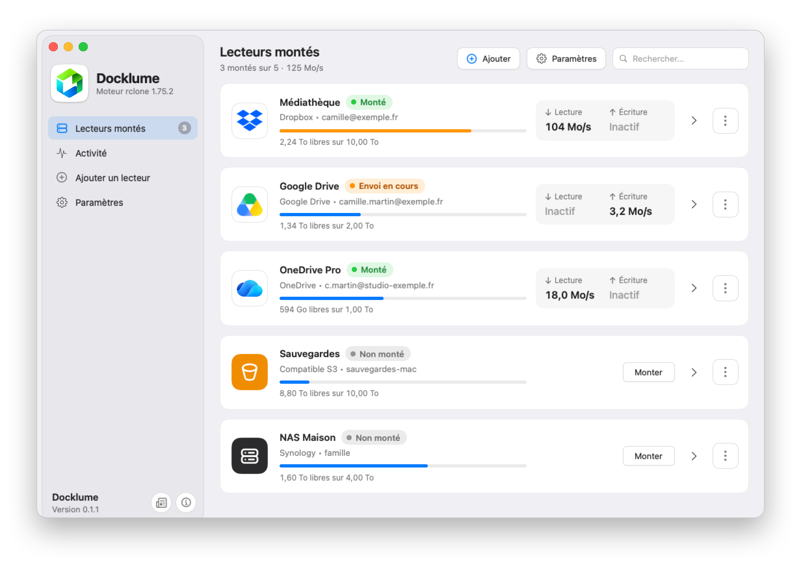
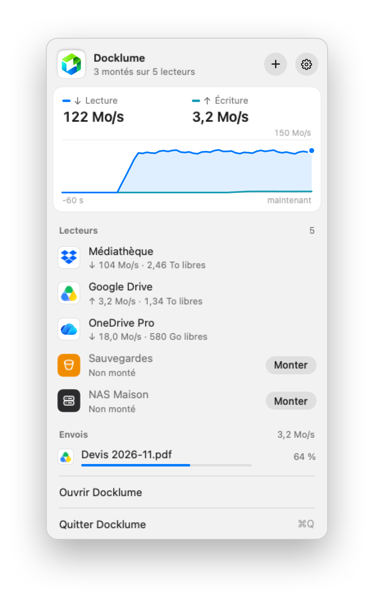
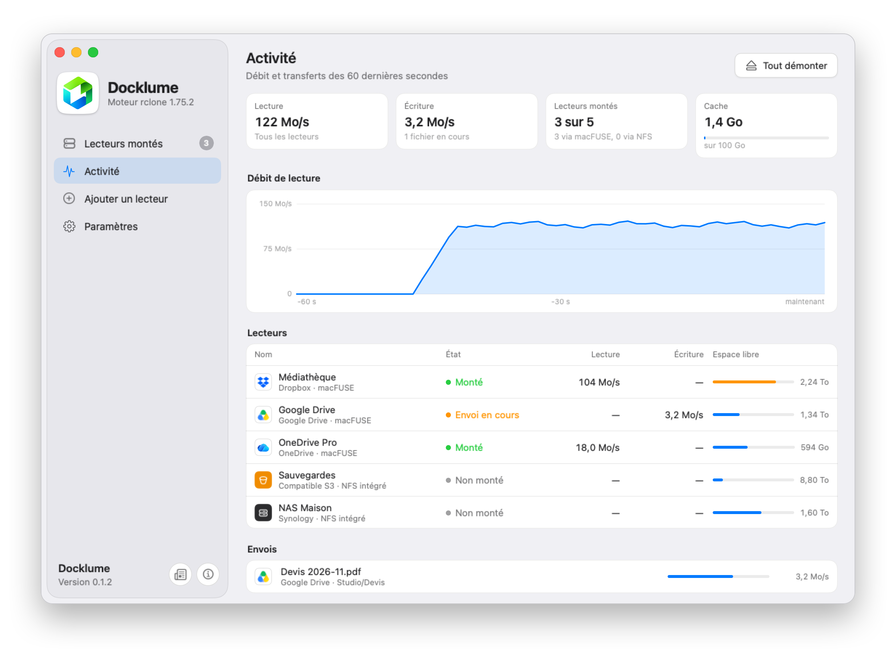

Vos clouds,
dans le Finder.
Docklume monte Dropbox, Google Drive, OneDrive, S3 et vos NAS comme des disques, en un clic et à pleine vitesse.

Pensé pour la vitesse.
Le moteur rclone fourni avec Docklume partage 16 connexions entre les fichiers lus, la limite que Dropbox accepte par compte.
Tout ce qu'un disque doit faire.
Une app native en SwiftUI, un processus rclone par lecteur, des réglages mesurés plutôt que devinés.
macFUSE ou NFS
macFUSE lit directement depuis le réseau, sans rien écrire sur le disque. Le client NFS de macOS ne demande aucune installation.
Un profil par usage
Streaming pour Emby, Plex et Jellyfin, Documents pour le travail courant, Sauvegarde pour les grosses copies.
Le débit en direct
Un graphique dans la barre des menus, une page Activité et un test de débit pour chaque lecteur.
Vos envois protégés
Un fichier pas encore envoyé reste dans le cache, même quand vous le videz. Docklume prévient avant de démonter ou de quitter.
Sans surprise
Reconnexion automatique, limite de débit appliquée à chaud, disque protégé quand l'espace libre baisse.
Privé
Aucun serveur, aucune télémétrie. Vos identifiants restent dans rclone.conf, sur votre Mac.


Quinze services, un seul geste.
Les remotes de votre rclone.conf sont importés au premier lancement.